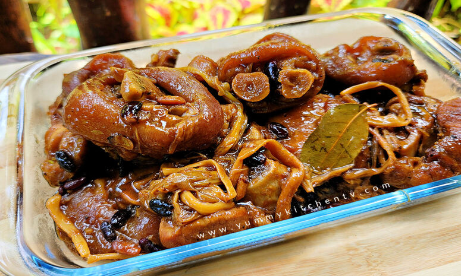

Pork Pata Humba

Ingredients
- 2 lbs ham hock pata, sliced.
- 1/2 cup dried banana blossoms.
- 1 Knorr pork cube.
- 1/4 cup salted black beans.
- 1/4 cup dark brown sugar.
- 1 medium yellow onion.
- 4 cloves garlic crushed.
- 3 pieces dried bay leaves.
- 1/2 teaspoon crushed peppercorn.
- 4 cups pineapple juice.
- 1/2 cup soy sauce.
- 1 teaspoon vinegar.
- 6 cups water.
- 3 tablespoons cooking oil.

Cooking Procedures
- Pour water in a cooking pot. Let boil.
- Add the ham hock (pata). Scoop out the scums that will eventually float. Cover and boil in medium heat for 40 to 60 minutes. You can add more water if needed.
- Remove the pata from the cooking pot and set it aside. Discard the water.
- Pour oil into a clean cooking pot.
- Once the oil gets hot, saute garlic and onion.
- Add the boiled pata. Stir and cook for 1 minute.
- Pour the soy sauce and pineapple juice into the pot. Let boil..
- Add the pork cube. Stir.
- Add the dried bay leaves, cracked peppercorns, dried banana blossoms, and salted black beans (tausi). Stir. Cover and continue to cook between low to medium heat until the liquid reduces to half.
- Add the vinegar. Stir and then add the dark brown sugar. Continue to cook for 5 minutes.
- Transfer to a serving bowl or plate. Serve.